Búsqueda de caminos con BFS, DFS, UCS y A* sobre un tablero editable de 20 × 20
| Autor | Julen Altuna |
| Asignatura | Programación de IA |
| Fecha | 30 de septiembre de 2026 |
| Aplicación (Vercel) | laboratorio-rutas.vercel.app |
| Repositorio (GitHub) | github.com/altu44/laboratorio-rutas |
Se ha desarrollado una aplicación web estática que permite dibujar un tablero de 20 × 20 celdas con un inicio, una o varias metas (cada una con una penalización no negativa), obstáculos y baldosas con peso, y ejecutar sobre él cuatro algoritmos de búsqueda: BFS, DFS, UCS y A*. La aplicación anima la exploración (celdas exploradas, frontera y ruta final), permite pausarla y cambiar la velocidad, informa de las métricas (exploradas, pasos, coste de la ruta, coste de la meta y coste total) y compara los cuatro algoritmos sobre el mismo mapa con una tabla, rutas superpuestas y una conclusión generada automáticamente.
Se incluyen cuatro escenarios diseñados que ponen a prueba decisiones distintas (menos pasos, atajo caro, varias metas y mapa sin solución), una batería de 14 pruebas automáticas (todas superadas) y la comprobación de que UCS y A* obtienen siempre el mismo coste óptimo en 504 mapas con pesos no negativos.
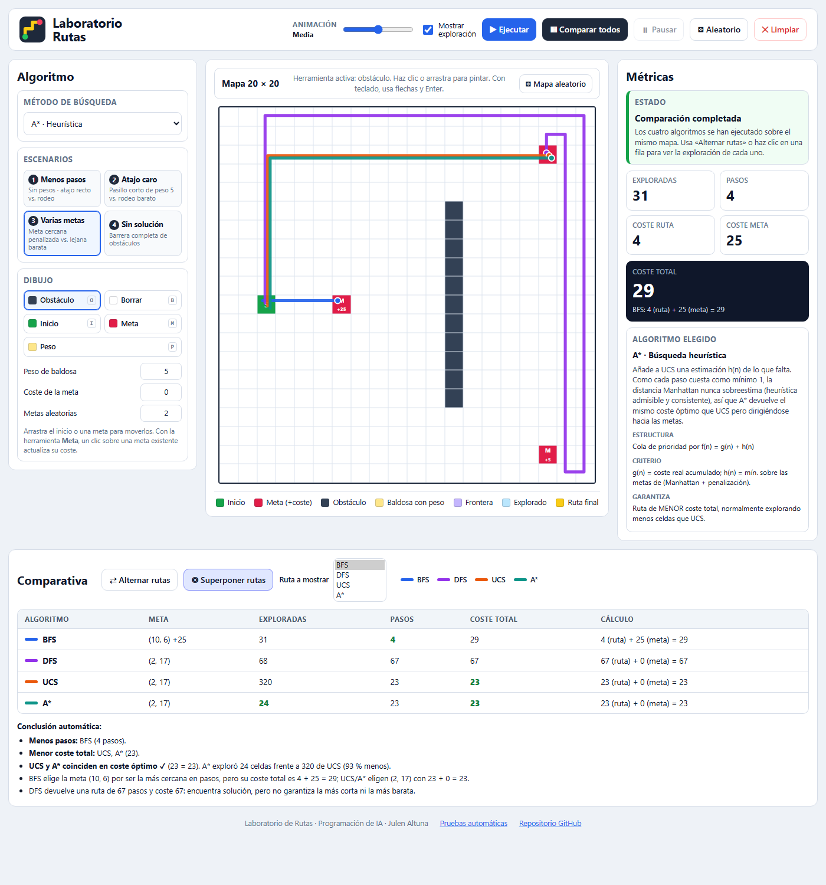
Se partió del enunciado y se agruparon los requisitos en cinco bloques: (1) tablero editable y coherente, (2) reglas de movimiento y coste, (3) los cuatro algoritmos, (4) visualización y métricas y (5) comparación. También se revisó el proyecto base laboratorio_rutas visto en clase, que implementaba los cuatro algoritmos con una sola meta, sin penalizaciones, sin pausa y con una cola de prioridad lineal; esos puntos se convirtieron en las mejoras del apartado 6.
Antes de programar se diseñó la estructura de la pantalla con draw.io (diagrams.net). El wireframe define cinco zonas: cabecera con los controles de ejecución, panel Algoritmo a la izquierda (método, escenarios y dibujo), el Mapa 20 × 20 en el centro con su leyenda, panel Métricas a la derecha y la zona Comparativa abajo. La aplicación final respeta esta distribución.
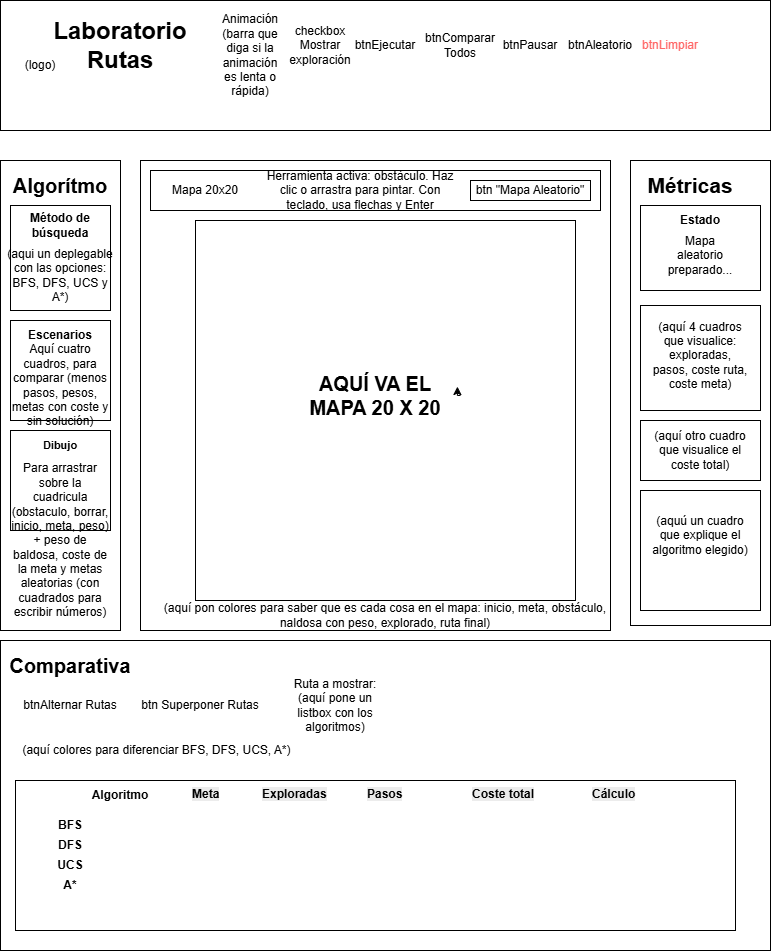
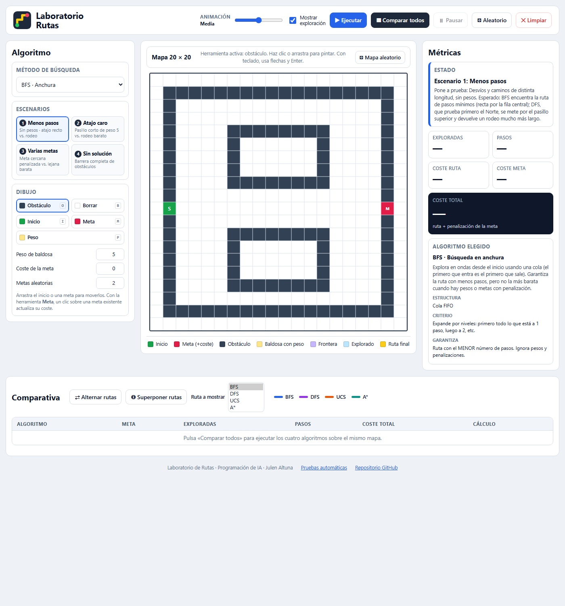
Se creó el repositorio Git con una separación clara entre estructura (index.html), estilo (css/), lógica (js/), pruebas (tests/) y documentación (docs/, informe/). La lógica se dividió en módulos pequeños que no dependen del DOM para poder probarlos por separado.
grid.js)Cada celda guarda un único tipo (empty, wall, weight, start, goal) más su peso o penalización. Así es imposible representar una celda que sea muro y meta a la vez. Todas las operaciones de edición (setWall, setWeight, erase, setStart, setGoal, moveSpecial) validan la operación y devuelven si han cambiado algo: el inicio es único, no se pisa una meta con el inicio ni al revés, y pesos y penalizaciones se limitan a enteros válidos (peso 2–99, penalización ≥ 0). El modelo también sabe cargar mapas escritos en texto y generar mapas aleatorios con semilla.
setGoal(row, col, penalty = 0) { const idx = this.index(row, col); if (idx === this.start) return false; // una meta no puede estar sobre el inicio const p = clampInt(penalty, 0, MAX_PENALTY, 0); // penalización NO negativa this.cells[idx] = { type: TYPE.GOAL, weight: 1, penalty: p }; return true; }
algorithms.js) y cola de prioridad (priorityQueue.js)Los cuatro algoritmos se escribieron como funciones puras: reciben el tablero y devuelven un objeto con la ruta, los pasos, el coste de ruta, la penalización, el coste total, las celdas exploradas y una traza (qué celda se expande en cada paso y qué vecinos entran en la frontera). La interfaz usa esa traza para animar. UCS y A* comparten el mismo código de búsqueda de mejor-primero y solo se diferencian en la heurística. La cola de prioridad mantiene los elementos ordenados insertándolos con búsqueda binaria.
app.js, styles.css)Se construyeron las 400 celdas una sola vez y se repintan por clases CSS. La edición funciona con ratón, táctil (pointer events) y teclado (flechas + Enter). Arrastrar el inicio o una meta los mueve. La animación avanza la traza con setTimeout según la velocidad elegida y se puede pausar y reanudar; si el usuario edita el tablero durante o después de una ejecución, la animación se detiene y los resultados se invalidan.
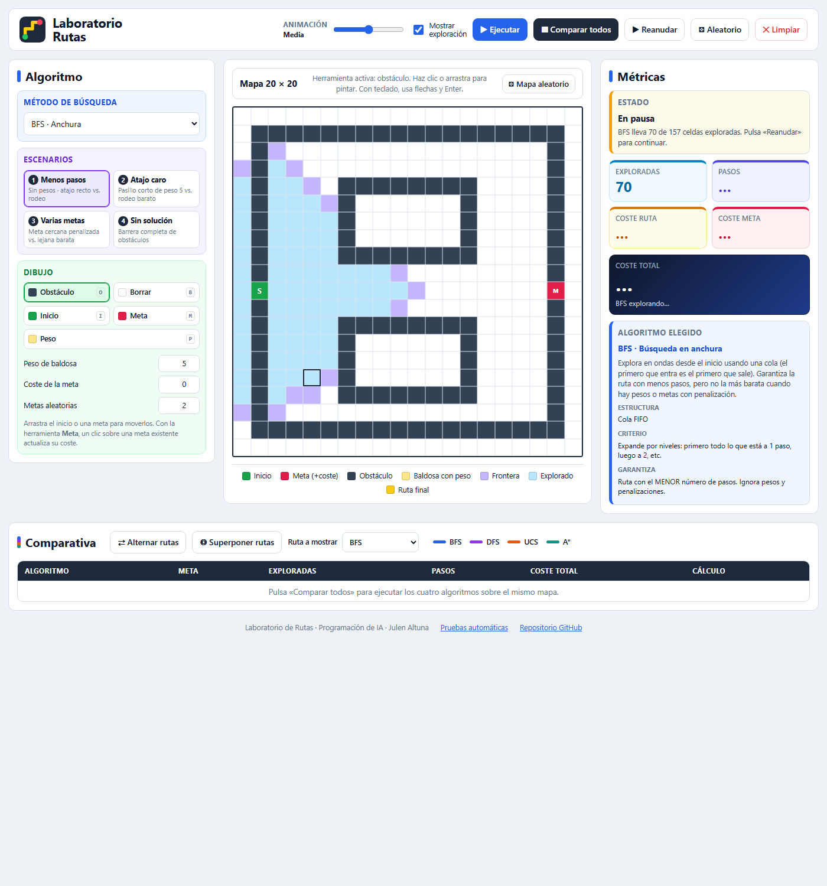
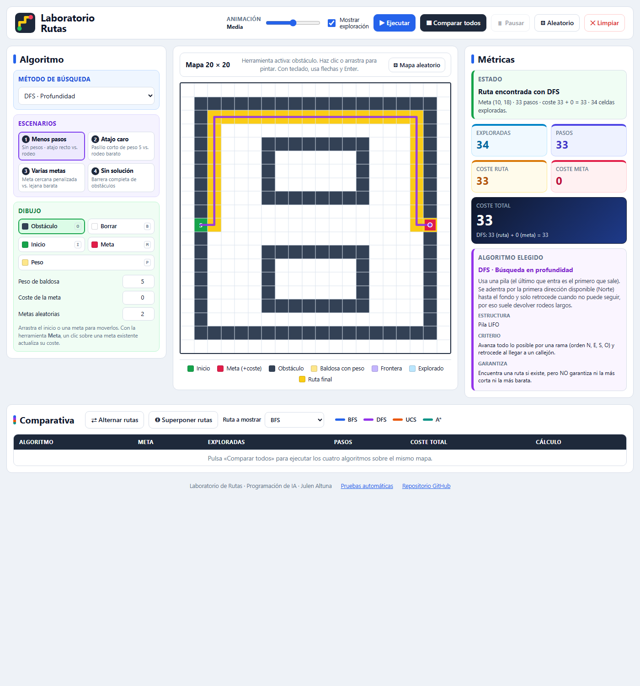
Comparar todos ejecuta los cuatro algoritmos sobre una misma copia del tablero, rellena la tabla (meta, exploradas, pasos, coste total y cálculo), resalta en verde el mejor valor de cada columna y genera una conclusión automática. Las rutas pueden verse superpuestas (cada algoritmo con su color y un pequeño desplazamiento para que no se tapen) o una a una con Alternar rutas, la lista Ruta a mostrar o haciendo clic en una fila.
scenarios.js)Los cuatro escenarios se definieron como texto (# muro, S inicio, dígitos = peso, letras = metas) para que se carguen siempre igual. Cada uno se diseñó para provocar una decisión concreta y se ajustó comprobando sus resultados con las pruebas automáticas (apartado 4).
// Escenario 2 · Atajo caro (fragmento) "..################..", ".S.55555555555555.G.", // pasillo corto: 14 baldosas de peso 5 "..################..",
Se creó tests/tests.html, que carga los mismos módulos que la aplicación y ejecuta 14 casos con entrada, esperado, obtenido y estado. Además, la aplicación acepta parámetros de URL (?escenario=, ?mapa=, &guion=) que reproducen exactamente un estado; con ellos y Chrome en modo headless se generaron todas las capturas de este informe.
El código se subió a un repositorio público de GitHub y se importó en Vercel. Al ser un sitio estático no hay paso de compilación: Vercel publica la raíz del repositorio tal cual (vercel.json solo añade cabeceras de seguridad); cada git push a main redespliega la web automáticamente.
Es una aplicación cliente pura (no hay servidor ni base de datos) organizada en capas: presentación (HTML + CSS), controlador de interfaz (app.js) y dominio (modelo, estructuras de datos y algoritmos), que no conoce el DOM. Todos los módulos se cargan como scripts clásicos y comparten un único espacio de nombres global Lab, de modo que la web funciona incluso abriendo el archivo con doble clic.
| Archivo | Responsabilidad |
|---|---|
index.html | Estructura semántica: cabecera, tres paneles (aside / section), comparativa y pie. Carga los scripts en orden de dependencia. |
css/styles.css | Variables de color, CSS Grid para el layout de 3 columnas, tablero cuadrado con aspect-ratio: 1/1, estados de celda y reglas @media para tablet y móvil. |
js/grid.js | Clase Grid: celdas, inicio, metas, costes de entrada, validación (validate()), edición coherente, carga desde texto y mapas aleatorios reproducibles (generador mulberry32). |
js/priorityQueue.js | binarySearch, lowerBound y la clase PriorityQueue estable (prioridad, desempate, orden de llegada). |
js/algorithms.js | bfs, dfs, ucs, astar, heurística multi-meta, reconstrucción de la ruta y cálculo de costes. search.run() valida, ejecuta y mide el tiempo; search.runAll() ejecuta los cuatro. |
js/scenarios.js | Definición de los cuatro escenarios (mapa, penalizaciones, qué ponen a prueba y resultado esperado). |
js/app.js | Pintado del tablero, eventos de ratón/táctil/teclado, animación de la traza, pausa, métricas, explicación del algoritmo, comparativa, conclusiones y parámetros de URL. |
tests/ | Página de pruebas que ejecuta los 14 casos y muestra la tabla de resultados de los escenarios. |
app.js llama a Lab.search.run(alg, grid).run valida el tablero (inicio y al menos una meta). Si falta algo, devuelve un error y la interfaz muestra “No se puede ejecutar”.{ found, path, steps, pathCost, penalty, totalCost, explored, trace }.trace a la velocidad elegida pintando frontera y exploradas; al terminar dibuja la ruta (celdas amarillas + línea SVG) y rellena las métricas.boardChanged(), que detiene la animación e invalida los resultados.El contrato común entre algoritmos (mismo formato de resultado y misma traza) es lo que permite animarlos y compararlos con el mismo código de interfaz.
El tablero se modela como un grafo: cada celda transitable es un nodo y existe una arista hacia cada vecina ortogonal (Norte, Este, Sur, Oeste, en ese orden). El coste de una arista es el coste de entrar en la celda destino (1 o su peso). Si la meta alcanzada tiene penalización, se suma al final: coste total = coste de la ruta + penalización. Los cuatro algoritmos son búsquedas en grafo: guardan qué nodos ya se han expandido para no repetirlos, lo que garantiza que terminan siempre, también cuando no hay solución.
Usa una cola FIFO: el primer nodo que entra es el primero que se expande. Por eso explora “en ondas”: primero todas las celdas a 1 paso, después las de 2, etc. La primera meta que sale de la cola es la que está a menos pasos. Es completo y óptimo en número de pasos, pero ignora pesos y penalizaciones.
cola ← [inicio]; descubierto[inicio] ← cierto mientras cola no vacía: n ← cola.sacarPrimero() si n es meta: devolver ruta(n) para cada vecino v de n (N, E, S, O) no descubierto: descubierto[v] ← cierto; padre[v] ← n; cola.añadir(v) devolver "sin ruta"
Usa una pila LIFO: siempre continúa por el último vecino añadido. Los vecinos se apilan en orden inverso para que el primero en salir sea el Norte, así que DFS avanza hacia el Norte hasta chocar, luego al Este, etc., y solo retrocede en los callejones. Es completo en un tablero finito, explora pocas celdas cuando “acierta”, pero no garantiza la ruta más corta ni la más barata.
pila ← [(inicio, -)] mientras pila no vacía: (n, p) ← pila.sacarÚltimo() si visitado[n]: continuar visitado[n] ← cierto; padre[n] ← p si n es meta: devolver ruta(n) para cada vecino v de n en orden O, S, E, N: si no visitado[v]: pila.añadir((v, n))
Es el algoritmo de Dijkstra orientado a encontrar una meta. Usa una cola de prioridad ordenada por g(n), el coste acumulado desde el inicio, y siempre expande el nodo más barato. Si un vecino se alcanza por un camino más barato que el conocido, se actualiza. Con costes no negativos es completo y óptimo en coste.
Varias metas con penalización. No basta con parar en la primera meta expandida: una meta cercana puede tener una penalización enorme. Por eso, al expandir una meta se inserta en la cola un nodo final con prioridad g(meta) + penalización. La búsqueda termina cuando un nodo final sale de la cola: en ese momento ninguna otra alternativa puede ser más barata. Es equivalente a añadir un nodo virtual “FIN” conectado a cada meta con una arista de coste igual a su penalización.
g[inicio] ← 0; cola.insertar(inicio, 0) mientras cola no vacía: e ← cola.sacarMínimo() si e es nodo final: devolver ruta(e.meta) si cerrado[e]: continuar; cerrado[e] ← cierto si e es meta: cola.insertar(FINAL(e), g[e] + penalización(e)) para cada vecino v: si g[e] + coste(v) < g[v]: g[v] ← g[e] + coste(v); padre[v] ← e; cola.insertar(v, g[v])
Igual que UCS pero ordenando por f(n) = g(n) + h(n), donde h estima lo que falta. Con varias metas se usa
h(n) = minm ∈ metas ( |filan − filam| + |coln − colm| + penalización(m) )
Como no hay diagonales y cada paso cuesta como mínimo 1, la distancia Manhattan nunca sobreestima el coste real: h es admisible y consistente (también para el nodo final, ya que h(meta) ≤ penalización de esa meta). Por tanto A* devuelve el mismo coste óptimo que UCS, pero se dirige hacia la meta más prometedora y expande muchas menos celdas. En los empates de f se prefiere el nodo con menor h (el más cercano a la meta).
La búsqueda binaria localiza un valor en un array ordenado comparando con el elemento central y descartando la mitad en cada paso: coste O(log n) frente a O(n) de una búsqueda lineal.
function binarySearch(ordenado, x) { let lo = 0, hi = ordenado.length - 1; while (lo <= hi) { const mid = (lo + hi) >> 1; if (ordenado[mid] === x) return mid; if (ordenado[mid] < x) lo = mid + 1; else hi = mid - 1; } return -1; }
En el laboratorio se aplica en la cola de prioridad de UCS y A*: la lista se mantiene ordenada de peor a mejor y cada inserción usa una variante (lower bound) para encontrar su posición en O(log n). Extraer el mejor elemento es un simple pop() del final, O(1). El proyecto base, en cambio, recorría toda la lista en cada extracción. La cola es además estable (a igual prioridad sale antes el que entró antes), lo que hace los resultados deterministas.
| Estructura | Expande primero | Completo | Mín. pasos | Mín. coste | Usa pesos/penalización | |
|---|---|---|---|---|---|---|
| BFS | Cola FIFO | El nodo con menos pasos | Sí | Sí | No | No |
| DFS | Pila LIFO | El nodo más profundo | Sí* | No | No | No |
| UCS | Cola de prioridad g(n) | El de menor coste acumulado | Sí | No | Sí | Sí |
| A* | Cola de prioridad f(n) | El de menor coste estimado total | Sí | No | Sí | Sí (y en la heurística) |
* DFS es completo en grafos finitos con control de visitados, como este tablero. Complejidad en el peor caso: O(V + E) para BFS/DFS y O(V log V) para UCS/A*, con V = 400 celdas.
Resultados obtenidos al pulsar Comparar todos en cada escenario (idénticos a los de tests/tests.html). Pasos = movimientos de la ruta; coste = ruta + penalización; exploradas = nodos expandidos.
| Escenario | Algoritmo | Meta | Pasos | Coste total | Exploradas | Conclusión |
|---|---|---|---|---|---|---|
| 1. Menos pasos Sin pesos. Atajo recto por la fila central frente a pasillos de rodeo. | BFS | (10,18) | 17 | 17 | 157 | BFS obtiene los pasos mínimos. DFS prueba primero el Norte, entra en el pasillo superior y devuelve un rodeo de 33 pasos (casi el doble). Sin pesos, UCS y A* coinciden con BFS; A* explora 18 celdas frente a 157. |
| DFS | (10,18) | 33 | 33 | 34 | ||
| UCS | (10,18) | 17 | 17 | 157 | ||
| A* | (10,18) | 17 | 17 | 18 | ||
| 2. Atajo caro Pasillo recto de 14 baldosas de peso 5 frente a rodeo sin pesos. | BFS | (10,18) | 17 | 73 | 240 | BFS prefiere menos pasos y cruza el pasillo caro (3 celdas normales + 14 × 5 = 73). UCS y A* dan 4 pasos más por el rodeo pero cuestan 21, menos de un tercio. A* explora 26 celdas frente a 299 de UCS. |
| DFS | (10,18) | 57 | 57 | 58 | ||
| UCS | (10,18) | 21 | 21 | 299 | ||
| A* | (10,18) | 21 | 21 | 26 | ||
| 3. Varias metas G (10,6) +25 cercana; H (2,17) +0 y I (18,17) +5 lejanas. | BFS | G (10,6) +25 | 4 | 29 | 31 | BFS se queda con la meta más cercana en pasos aunque su coste total sea 4 + 25 = 29. UCS y A* comparan coste total: H = 23 + 0 = 23, I = 23 + 5 = 28, G = 29, y eligen H. |
| DFS | H (2,17) | 67 | 67 | 68 | ||
| UCS | H (2,17) | 23 | 23 | 320 | ||
| A* | H (2,17) | 23 | 23 | 24 | ||
| 4. Sin solución Barrera completa en la columna 10. | BFS | — | — | ∞ | 190 | Los cuatro terminan tras expandir las 190 celdas alcanzables de la mitad izquierda e informan “Sin solución”. Sin ruta posible, la heurística de A* no ahorra trabajo. |
| DFS | — | — | ∞ | 190 | ||
| UCS | — | — | ∞ | 190 | ||
| A* | — | — | ∞ | 190 |
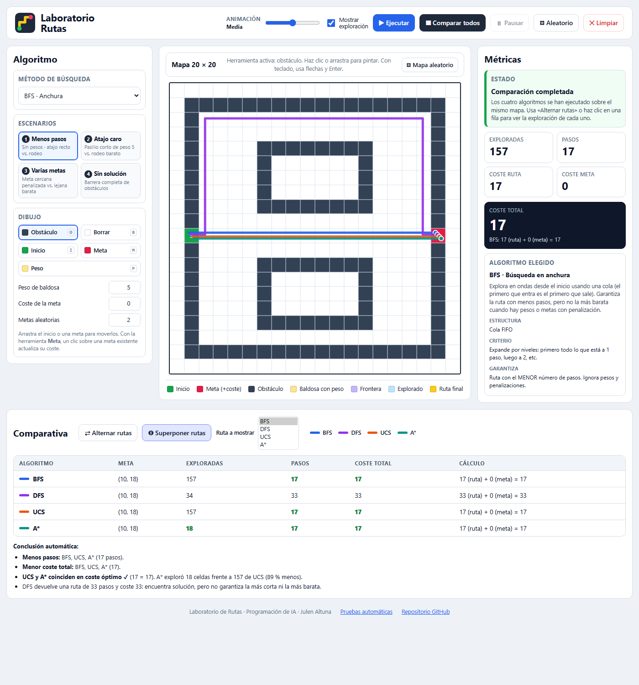
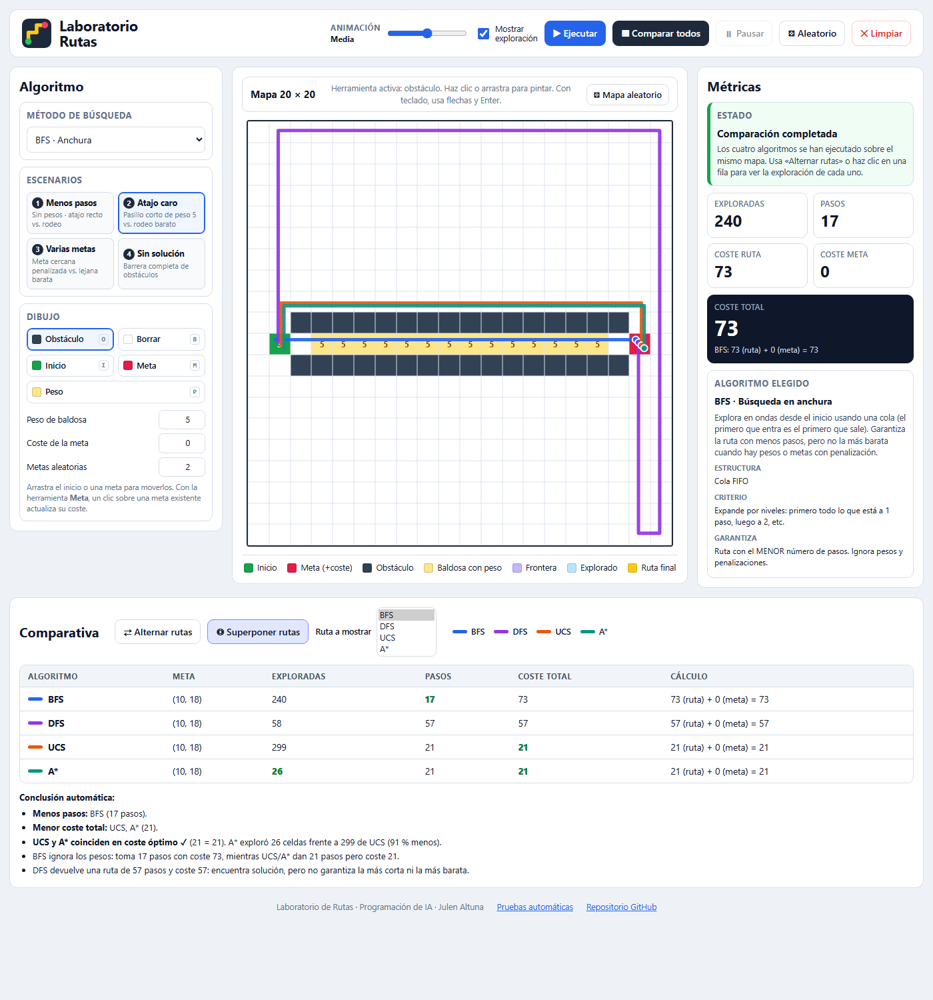
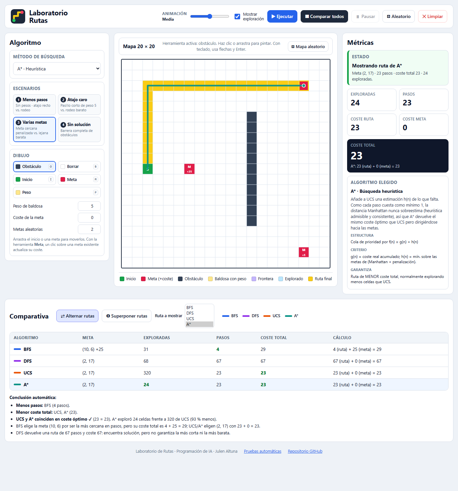
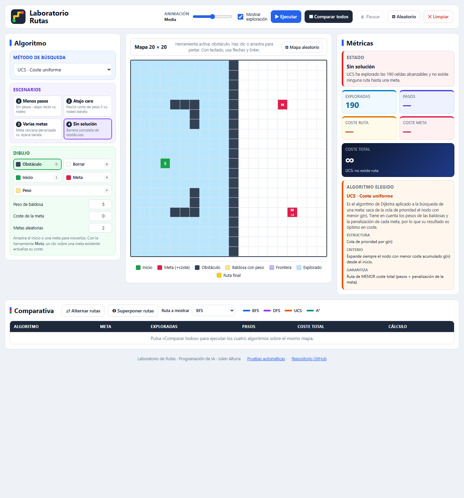
HTML (HyperText Markup Language) no es un lenguaje de programación sino de etiquetado: describe la estructura y el significado del contenido mediante etiquetas. En el laboratorio define las zonas diseñadas en draw.io con etiquetas semánticas: <header> para los controles, <main> con dos <aside> (Algoritmo y Métricas) y una <section> (Mapa), otra <section> para la Comparativa con una <table>, y controles nativos (<select>, <input type="range">, <input type="number">, <button>). Se añadieron atributos ARIA (role="grid", aria-label, aria-live) para que el tablero y los mensajes de estado sean accesibles con lector de pantalla.
Justificación: es el estándar que interpreta cualquier navegador, no requiere instalación y separa claramente la estructura del estilo y de la lógica.
Se usa CSS Grid para la distribución en tres columnas y para el propio tablero (grid-template-columns: repeat(20, 1fr)), aspect-ratio: 1 / 1 para que el mapa sea siempre cuadrado, variables CSS para centralizar la paleta (cada estado de celda y cada algoritmo tiene su color) y @media para adaptar la página a tablet y móvil.
JavaScript (estándar ECMAScript 2020) es el único lenguaje de programación que ejecutan de forma nativa todos los navegadores. Se utilizó sin frameworks ni librerías externas. Características empleadas: clases (Grid, PriorityQueue), funciones flecha, desestructuración, Set y Map, plantillas de texto, el operador ??, eventos de puntero (pointerdown/move/up) que unifican ratón y táctil, setTimeout para la animación y URLSearchParams para los estados reproducibles.
Justificación frente a alternativas:
SVG (Scalable Vector Graphics), también basado en etiquetas, se usa para dibujar las rutas encima del tablero (<polyline> con coordenadas en unidades de celda, por lo que escalan con el tamaño del mapa) y para el logotipo.
| Herramienta | Para qué se usó |
|---|---|
| draw.io (diagrams.net) | Diseño del wireframe con la estructura de la interfaz antes de programar (Figura 2). |
| Visual Studio Code | Editor de código. |
| Claude Code (asistente de IA) | Apoyo durante el desarrollo: generación y revisión de código, pruebas y documentación. |
| Git y GitHub | Control de versiones y repositorio público del proyecto. |
| Vercel | Alojamiento y despliegue continuo del sitio estático desde GitHub. |
| Google Chrome (DevTools y modo headless) | Depuración, ejecución de las pruebas, capturas reproducibles y exportación de este informe a PDF. |
Mejoras respecto al proyecto base de clase (laboratorio_rutas) y respecto a los requisitos mínimos:
| Área | Mejora |
|---|---|
| Algoritmos | Varias metas con penalización por meta (el base solo admitía una meta y un coste global). |
| UCS y A* con terminación correcta en multi-meta (nodo final con g + penalización) y heurística multi-meta admisible para A*. | |
| Cola de prioridad ordenada con Binary Search y desempate estable (el base buscaba el mínimo recorriendo toda la lista en cada extracción). | |
| DFS “auténtico”: marca los nodos al sacarlos de la pila; en el base se marcaban al apilarlos, lo que mezcla el comportamiento con BFS. | |
| Visualización | Se muestra la frontera además de las celdas exploradas y el nodo actual. |
| Botón Pausar / Reanudar y 5 velocidades (en las rápidas se procesan varias celdas por fotograma). | |
| Rutas dibujadas como líneas SVG; superposición de las cuatro rutas y modo alternar para ver la exploración de cada una. | |
| Métrica de coste total con el cálculo desglosado (ruta + meta) y panel con la explicación del algoritmo elegido. | |
| Comparación | Tabla con resaltado del mejor valor de cada columna, filas clicables y columna Cálculo. |
| Conclusión automática que explica las diferencias y verifica que UCS y A* coinciden en coste. | |
| Edición | Modelo con un tipo por celda: imposible que una celda sea muro y meta a la vez. |
| Arrastrar para mover inicio y metas; clic sobre una meta para cambiar su coste. | |
| Edición completa por teclado (flechas, Enter, atajos O/B/I/M/P) y soporte táctil. | |
| Al editar tras ejecutar se invalidan los resultados y la comparativa se marca como desactualizada. | |
| Reproducibilidad | Escenarios definidos en texto y mapas aleatorios con semilla (misma semilla = mismo mapa). |
Parámetros de URL y “guiones” (&guion=compare;show:ucs) que reproducen cualquier estado. | |
| 14 pruebas automáticas en el navegador, incluida la comprobación UCS = A* en 504 mapas. | |
| Interfaz | Diseño adaptable a móvil, accesibilidad (ARIA, foco visible) y sin dependencias externas. |
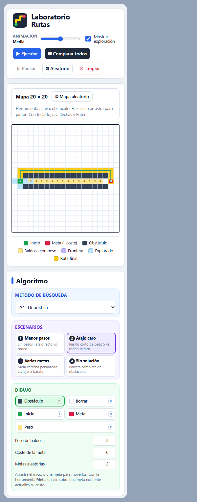
Las pruebas se ejecutan abriendo tests/tests.html. Cada caso indica entrada, resultado esperado y resultado obtenido; las capturas de interfaz se reproducen con los parámetros de URL indicados. Resultado: 14 / 14 pruebas superadas.
| ID | Caso | Entrada | Esperado | Obtenido | Estado |
|---|---|---|---|---|---|
| T01 | Ruta simple | Tablero vacío, S (0,0), meta (0,5). | Los 4: 5 pasos, coste 5. | Los 4: 5 pasos, coste 5 (BFS/UCS 16 expl., DFS/A* 6). | ✔ |
| T02 | Ausencia de inicio | Escenario 1 sin inicio → Ejecutar. | No ejecuta, aviso “Falta el inicio”. | Error “Falta el inicio…”, 0 exploradas; estado “No se puede ejecutar”. | ✔ |
| T03 | Ausencia de meta | Escenario 1 sin meta → Ejecutar. | No ejecuta, aviso “Falta la meta”. | Error “Falta la meta…”, 0 exploradas. | ✔ |
| T04 | Varias metas | Escenario 3 (G +25, H +0, I +5). | BFS → G (29); UCS/A* → H (23). | BFS G 4 pasos, 29; UCS H 23; A* H 23. | ✔ |
| T05 | Pesos | Escenario 2 (pasillo de peso 5). | BFS 17 pasos/73; UCS, A* 21/21. | BFS 17/73; UCS 21/21; A* 21/21. | ✔ |
| T06 | Obstáculos | Muro columna 10 (hueco fila 19), S (10,0), meta (10,19). | Rodean por (19,10); BFS/UCS/A* 37; DFS ≥ 37. | BFS/UCS/A* 37; DFS 77; ninguna pisa muros. | ✔ |
| T07 | Sin solución | Escenario 4. | Los 4 terminan sin ruta. | Los 4: sin ruta, 190 = celdas alcanzables. | ✔ |
| T08 | Edición tras ejecutar | Escenario 1 → comparar → muro en (10,9) → comparar. | Resultados invalidados; nueva ruta de 19 pasos que evita (10,9). | Antes 17; después 19; la ruta no pisa (10,9). | ✔ |
| T09 | Coherencia | Muro sobre meta, inicio sobre meta, meta sobre inicio, 2º inicio, penalización −3, peso 0. | Rechazados; 1 inicio; penalización 0; peso 2. | Todo rechazado; 1 inicio en (3,3); 0; 2. | ✔ |
| T10 | Penalización | S (0,0), meta (0,3) +7. | Los 4: 3 + 7 = 10. | Los 4: 3 + 7 = 10. | ✔ |
| T11 | UCS = A* | 4 escenarios + 500 mapas aleatorios. | Mismo coste en todos. | 504 mapas, 0 discrepancias. | ✔ |
| T12 | Rutas válidas | 200 mapas aleatorios. | Ortogonales, sin muros; BFS nunca más largo. | 788 rutas, 0 inválidas, 0 casos. | ✔ |
| T13 | Binary Search | [1,3,5,7,9,11]; cola A5, B2, C5, D1. | 3, 0, 5, −1; D, B, A, C. | 3, 0, 5, −1; D, B, A, C. | ✔ |
| T14 | Reproducibilidad | Escenarios y semilla 42 dos veces. | Idénticos. | Idénticos. | ✔ |
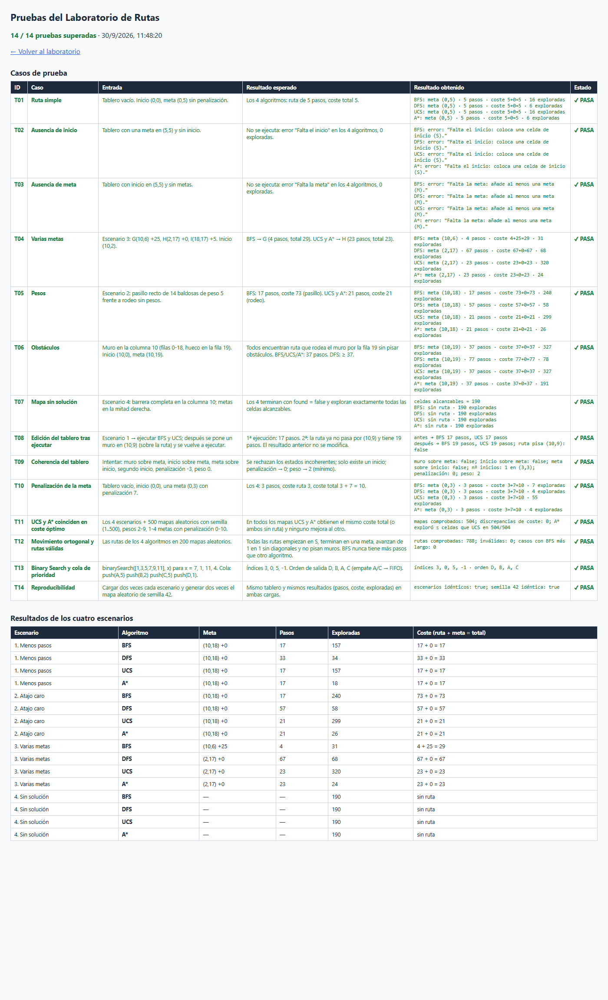
tests/tests.html).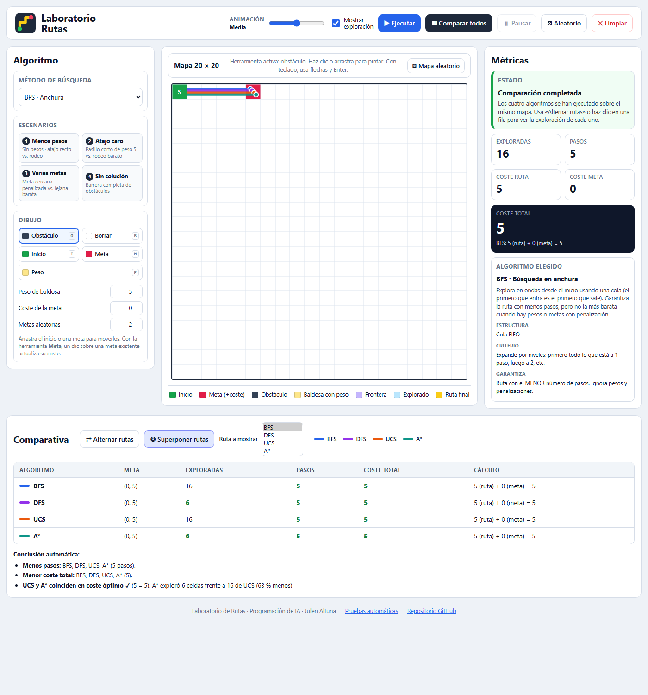
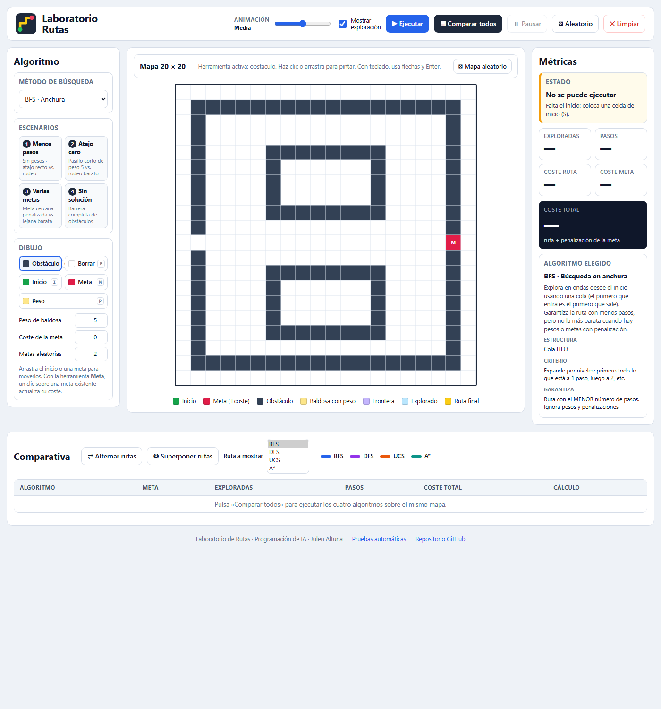
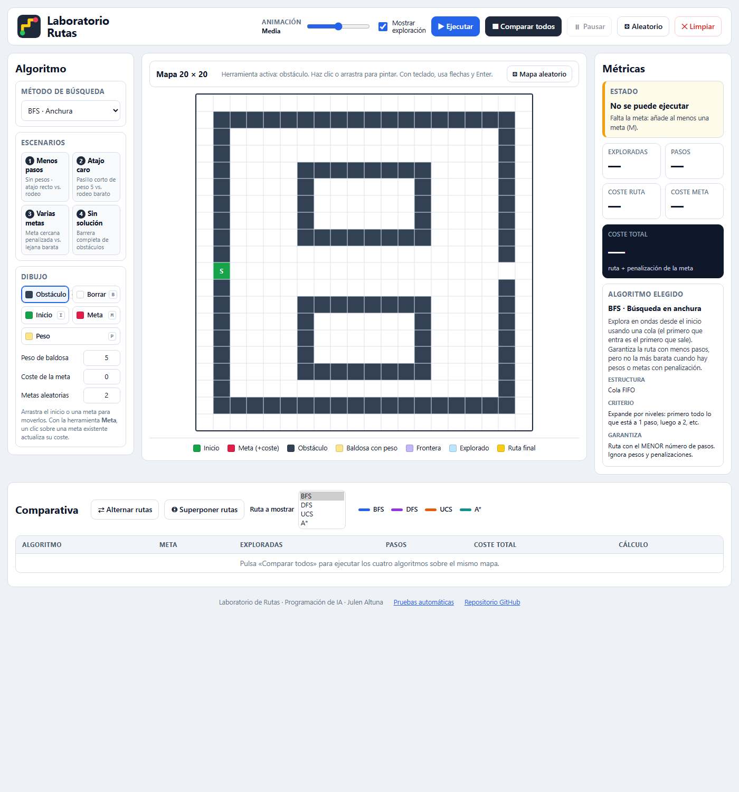
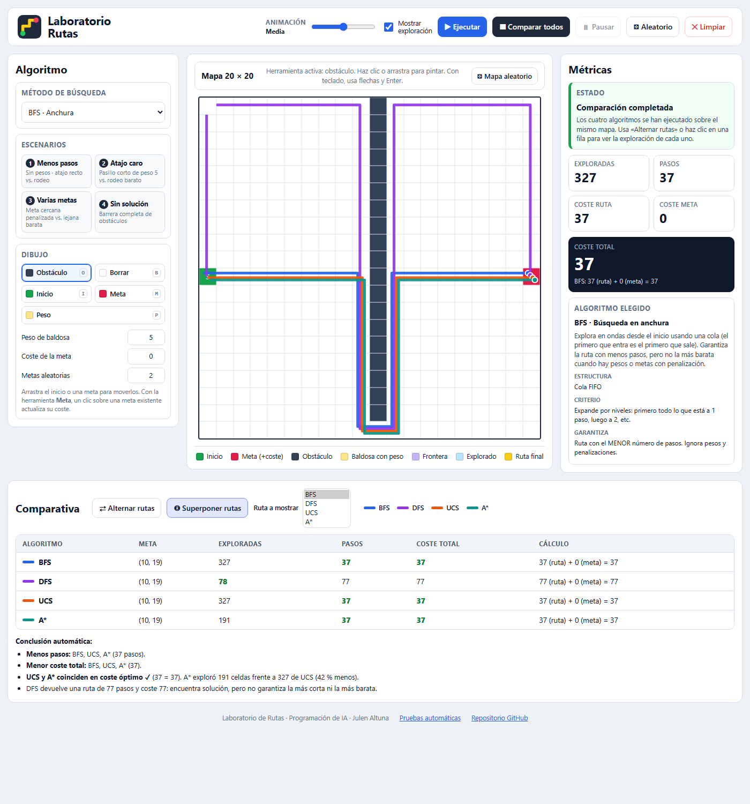
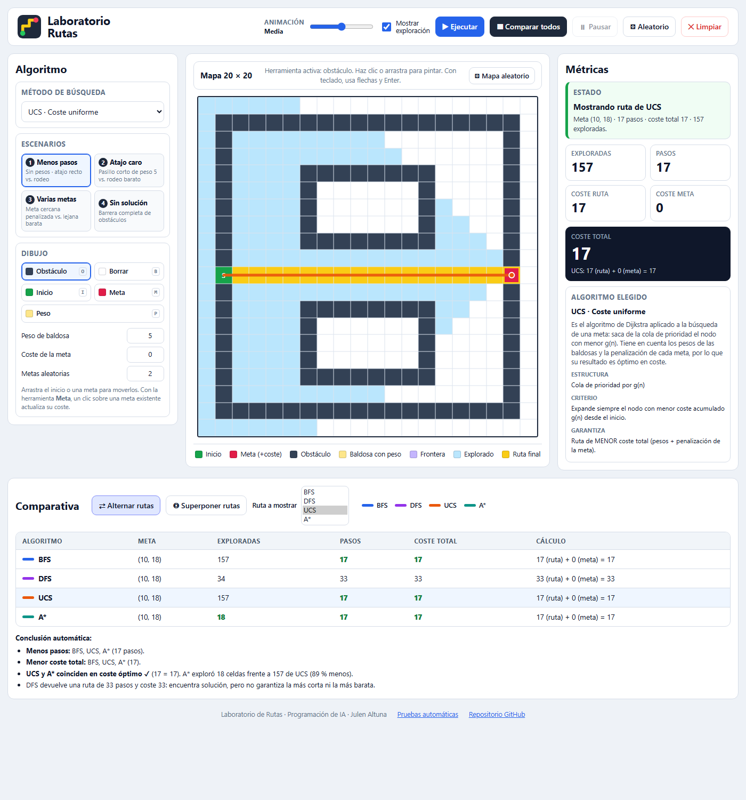
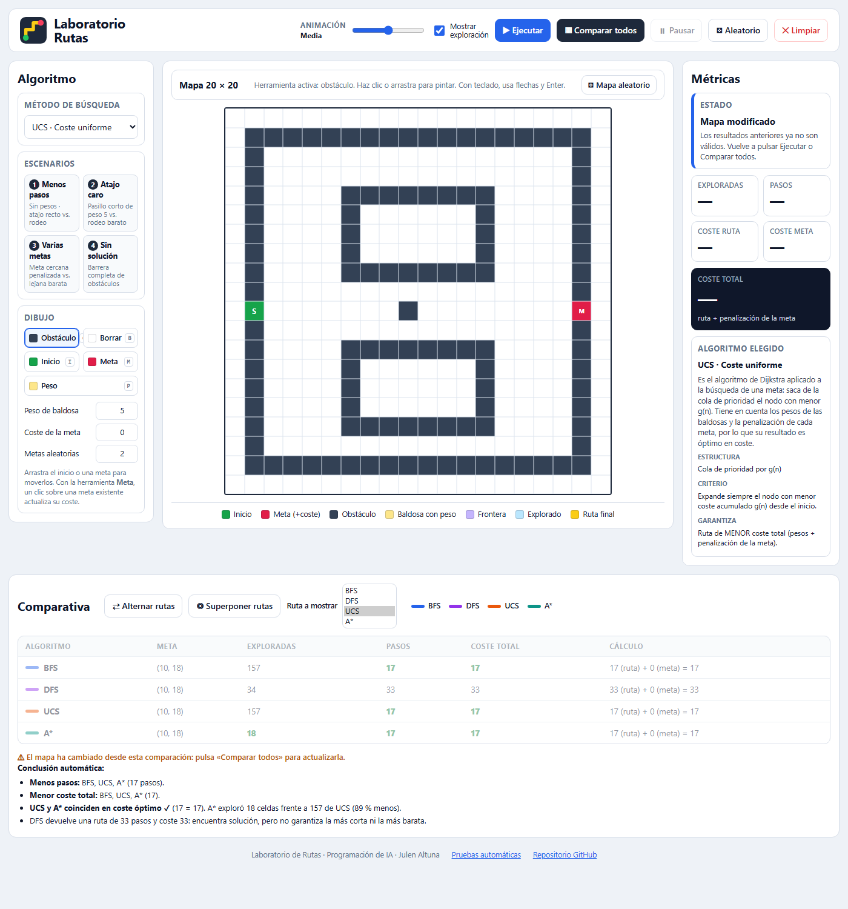
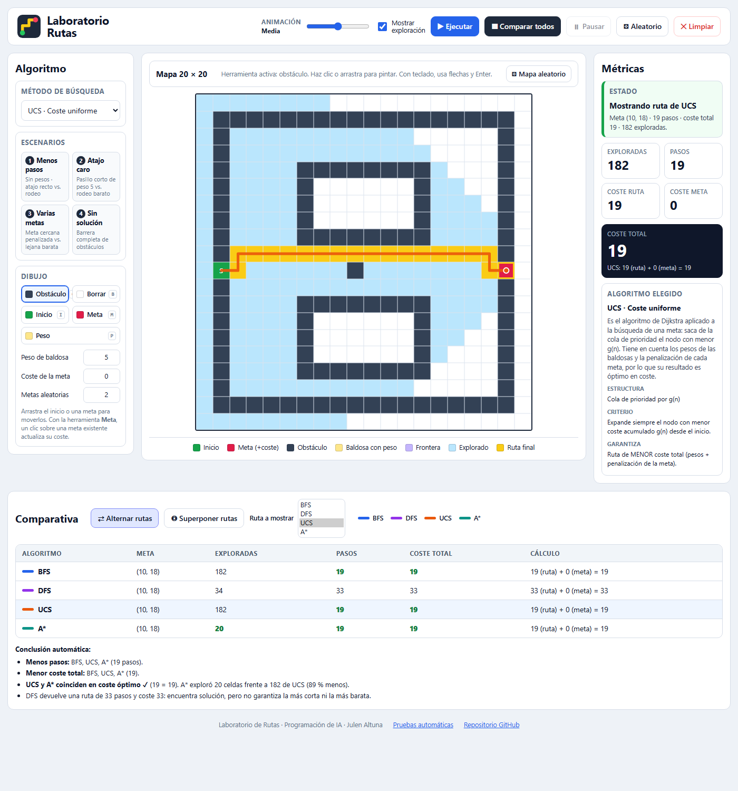
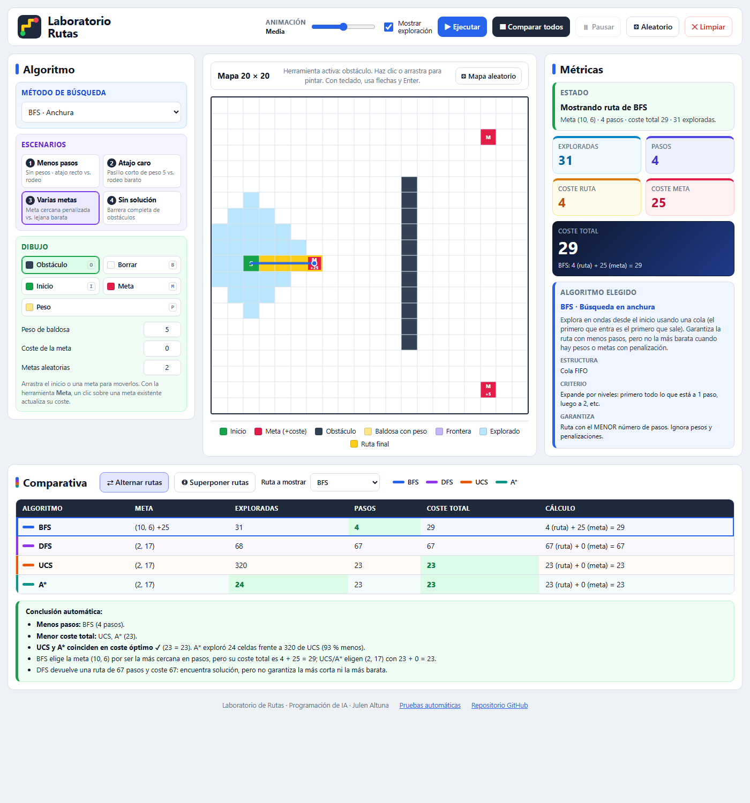
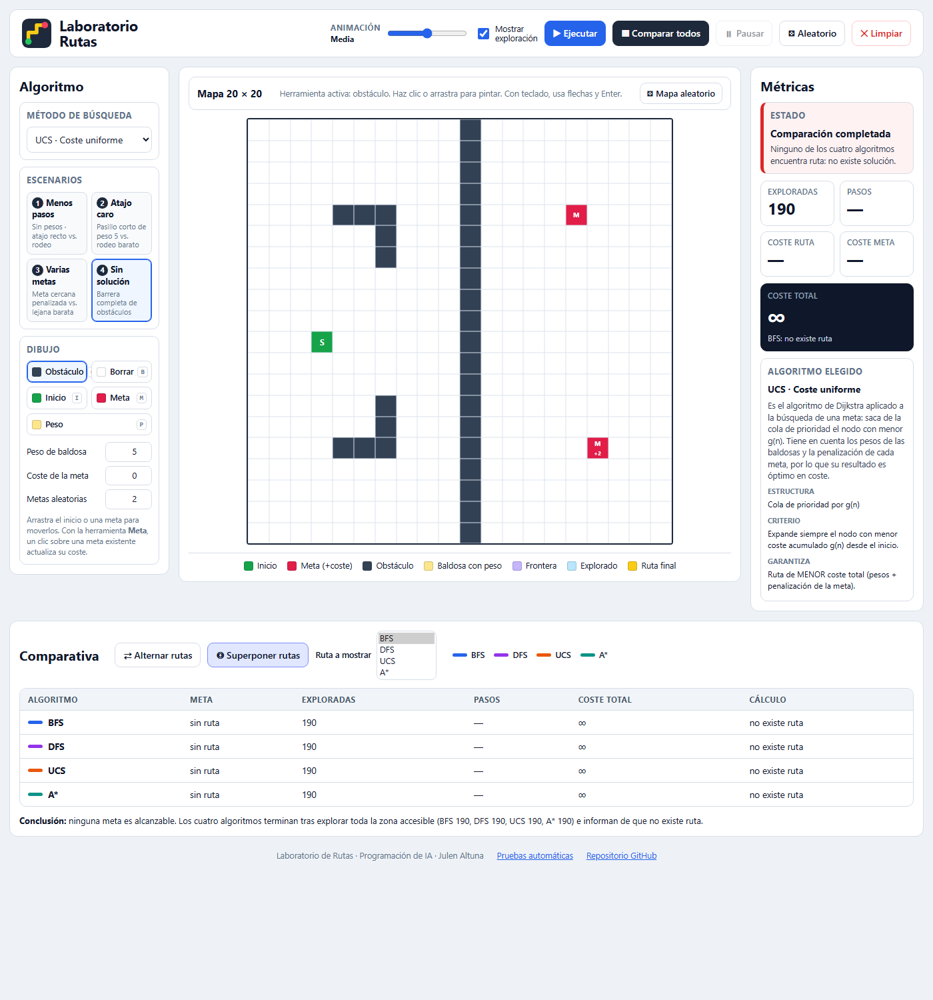
| Aplicación desplegada (Vercel) | https://laboratorio-rutas.vercel.app |
| Repositorio (GitHub) | https://github.com/altu44/laboratorio-rutas |
| Pruebas online | https://laboratorio-rutas.vercel.app/tests/tests.html |
| Documentación de pruebas | docs/pruebas.md |